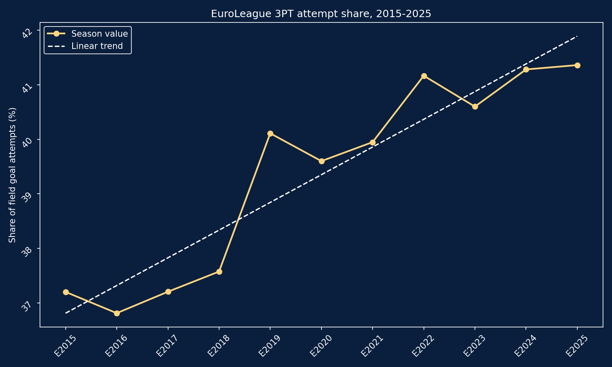
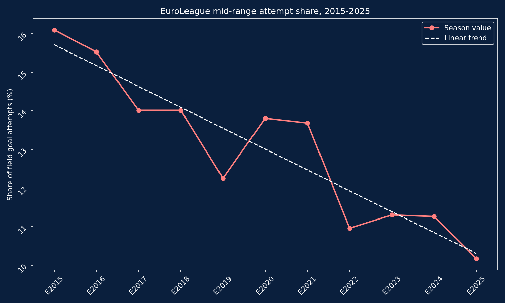

A league-wide shot data analysis testing whether EuroLeague followed the same shift the NBA made famous: trading mid-range jumpers for 3-point attempts, and why the math behind that shift makes sense even when raw shooting percentages look similar.
Over the past decade, NBA teams have moved away from mid-range shots in favor of shots at the rim and from beyond the arc, a shift often nicknamed "Moreyball" after Daryl Morey, the executive who pushed it hardest with the Houston Rockets. The logic isn't that mid-range shots are hard to guard, it's that they're a poor value: a well-defended 3-point attempt is often worth more, on average, than an open mid-range jumper.
This project asks whether EuroLeague has followed the same path, using shot-level data across 11 seasons: has the league moved away from the mid-range, and does the underlying shot value actually explain why?
Shot zones are derived directly from shot coordinates (in centimeters, measured from the basket), rather than relying on the zone labels already present in the data, to keep the classification transparent and consistent with the same method used in a related Olympiacos shot analysis project. Any 2-point attempt taken inside the FIBA key (the painted area under the basket, sometimes called the three-second area) is tagged Paint, everything outside it Mid-range. 3-point attempts are identified directly from the shot type.
Made/missed is derived from the points scored on each specific attempt rather than parsing shot-type text, which proved more reliable given how varied the raw action codes are. Free throws are excluded entirely: only makes are logged in the source data, with no matching attempt code, so they can't be reliably counted as attempts.
Comparing raw shooting percentages across zones might be misleading, since a 3-point make is worth more than a 2-point make. Effective field goal percentage corrects for this:
eFG% = (FGM + 0.5 x 3PM) / FGA
For 2-point zones (Paint, Mid-range), eFG% is identical to plain FG%. For 3-point attempts, eFG% is FG% multiplied by 1.5, since a made 3 is worth 1.5x a made 2. This is a standard way analysts compare shot value across zones.
| Zone | FG% | eFG% |
|---|---|---|
| Paint | 57.8% | 57.8% |
| 3PT | 36.6% | 55.0% |
| Mid-range | 38.3% | 38.3% |
This is the core finding. Looking at raw FG%, mid-range (38.3%) actually looks slightly better than 3-point shooting (36.6%), which might suggest mid-range is the more efficient shot. But once the extra point is accounted for, 3-point attempts are worth 55.0% effectively, nearly as valuable as a shot in the paint, and clearly ahead of the mid-range's 38.3%. The mid-range isn't a marginally worse shot, it's the worst value on the floor by a wide margin, even though it doesn't look that way in raw shooting percentage.


| Season | Paint | Mid-range | 3PT |
|---|---|---|---|
| E2015 | 46.7% | 16.1% | 37.2% |
| E2018 | 48.4% | 14.0% | 37.6% |
| E2021 | 46.4% | 13.7% | 39.9% |
| E2025 | 48.5% | 10.2% | 41.4% |
The two trends mirror each other almost exactly. Mid-range attempts have nearly been cut in half (16.1% to 10.2% of all shots), while 3-point attempts have grown steadily (37.2% to 41.4%). Paint attempts have stayed roughly flat throughout, hovering around 47-48%. The shift isn't away from 2-point shots in general, it's specifically away from the low-value mid-range jumper, exactly the pattern the eFG% numbers above would predict.